A COLLECTION OF LANDSCAPE PHOTOGRAPHS, TAKEN WHILE HIKING THROUGH THE PARKS OF MISSOURI. IT WAS NOT UNTIL RECENTLY THAT I SERIOUSLY BEGAN TO REALIZE THE DIFFERENCES BETWEEN NATURAL AND ARTIFICIAL SPACES. THIS WORK IS SHOWN IN BLACK-AND-WHITE, WITH AN OLDER FILM STYLE CAMERA AND IN COLOR, USING A NEWER DIGITAL CAMERA. I HAVE INTERTWINED EACH VISUAL WITH RACING STRIPES, IN AN ATTEMPT TO HELP BRIDGE THE GAP BETWEEN THESE EXTREME POINTS OF REFERENCE. AS OUR BLEEDING EDGE LIFESTYLES CONTINUE AT AN UNPRECEDENTED PACE, IT IS CRUCIAL TO NOTICE THE IMPACT HUMANS STILL HAVE ON NATURE. MY INTENTION IS THAT YOU RETRAIN YOURSELF TO WALK CAUTIOUSLY, WITH A BETTER APPRECIATION OF THE SLOWNESS, TO MAKE A PATH FOR YOUR THOUGHTS IN A DIRECTION THAT IS LESS DESTRUCTIVE AND MORE SUSTAINABLE.
* Any images or text used in the AUTO NATURE EXHIBITION are not an endorsement of the parks in Missouri, which were not involved with and did not collaborate on the making of this artwork.
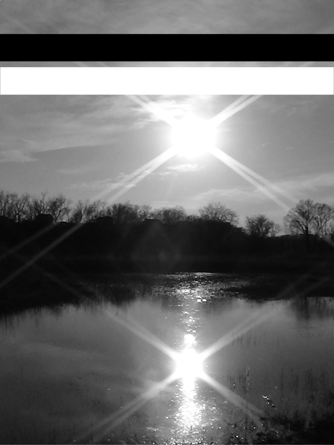
TWO SKIES, 2015
THIS PHOTOGRAPH SHOWS THOSE HIDDEN MOMENTS OF NATURE THAT NORMALLY ARE NOT SEEN BY THE HUMAN EYE. THE MACHINE WAS ABLE TO CAPTURE A GLARE OF THE SUN AND ITS REFLECTION IN THE WATER FROM THE CAMERA LENS. IF YOU LOOK CLOSELY, A SUBTLE VISUAL OF A DUAL OCTAHEDRON APPEARS BETWEEN THE BEAMS OF LIGHT NEAR THE CENTER-LEFT, ALMOST AS IN ANOTHER DIMENSION. THAT IMAGINARY WORLD THAT EXISTS, FULL OF ALL KINDS OF DIFFERENT SHAPES OUR MIND IS UNABLE TO COMPREHEND.
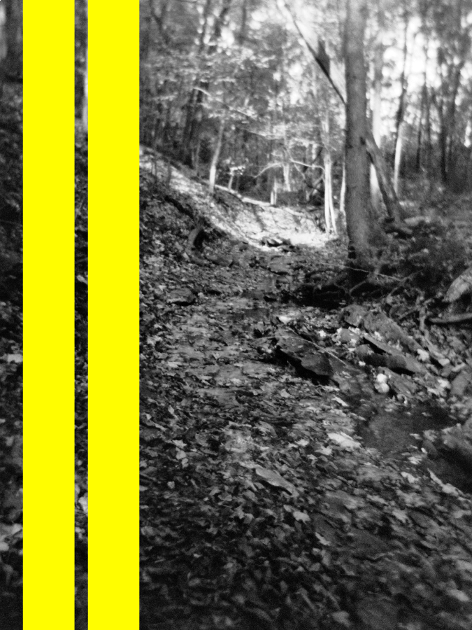
YELLOW ROAD, 2015
THE TRAIL IN THIS PHOTOGRAPH IS BARELY VISIBLE, COVERED BY LEAVES AND RUNNING THROUGH THE CENTER OF THE IMAGE. YOU CAN NOTICE A SHORT SLOPE TO THE LEFT AND SHALLOW BROOK TO THE RIGHT. THE CONTRAST OF DARK TO LIGHT GIVES THE IMAGE DEPTH. THE PICTURE ITSELF WAS TAKEN DURING THE GOLDEN HOUR, JUST AS THE SUN WAS ABOUT TO SET. THE HOLGA CAMERA GIVES THE SPACE A SENSE OF TIME AS IF IT HAD ALWAYS BEEN THERE AND YOU WERE THE ONE TO WALK THE PATH FOR THE FIRST TIME.
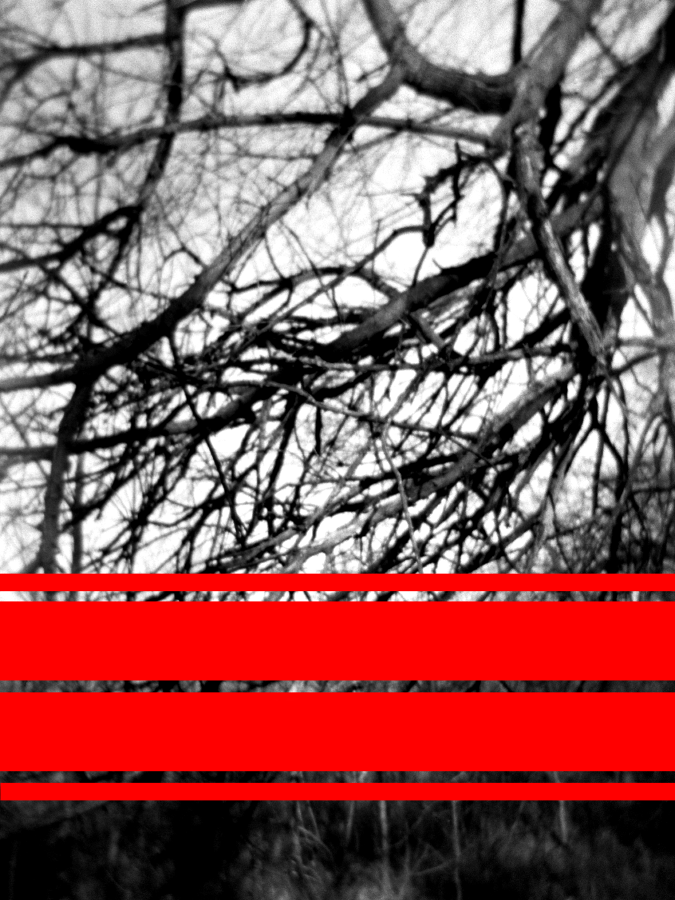
BRANCHES, 2015
I HAVE WALKED BY MANY BRANCHES, BUT NONE LIKE THIS. THE EXTENSIONS HAD GROWN SO MUCH THAT THEY BEGAN TO WEIGH THEMSELVES DOWN, ALMOST TOUCHING THE GROUND. AT FIRST SIGHT, IT APPEARS TO BE A DIVERGENT TANGLED MESS AND THEN AS I CONTINUED TO LOOK AT THE PICTURE ITS LIMBS STARTED TO SEEM MORE LIKE ROOTS. AS IF YOU WERE UNDERGROUND SOMEHOW AND ABLE TO SEE THROUGH THE SOIL.
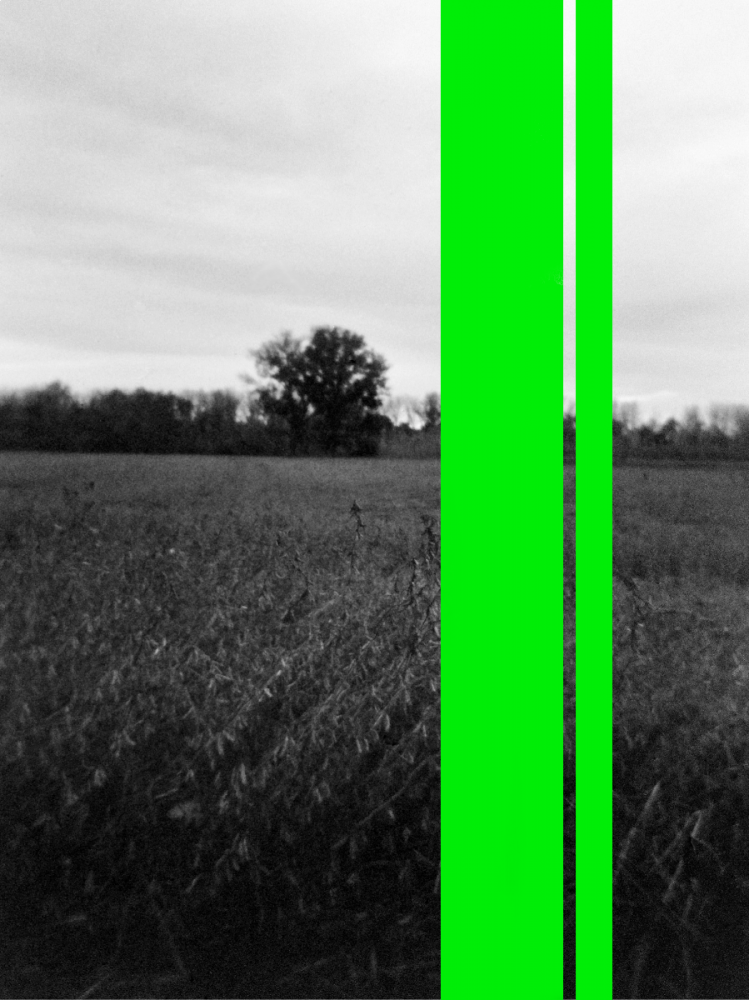
PRIVATE GREENS, 2015
AT FIRST GLANCE THE OLD OAK TREE APPEARS TO BE LONELY AND ISOLATED, GUARDED BY PRIVACY BEHIND THE HARVESTED FIELD, AS IF IT WERE THE LAST TREE STANDING. THEN THE MORE YOU LOOK AT IT, YOU BEGIN TO WONDER HOW MANY YEARS IT MIGHT HAVE TAKEN TO GROW AND WHAT KIND OF OTHER EXPERIENCES IT MIGHT HAVE HAD IF IT COULD TALK. GOT TO BE HUNDREDS OF YEARS OLD BY NOW. SOME THINGS YOU JUST DON'T WANT TO CUT DOWN.
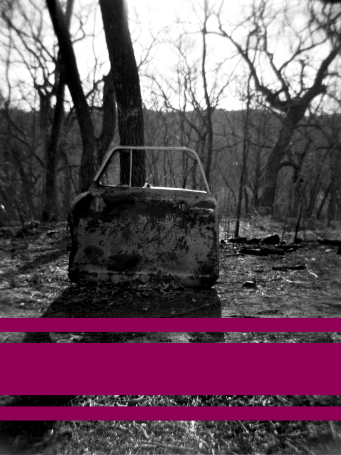
SUNDAY DRIVER, 2015
THIS PHOTOGRAPH WAS TAKEN JUST AFTER A CONTROLLED BURN. IF YOU LOOK CLOSELY, YOU CAN SEE THE REMNANTS OF A FIRE PIT IN THE BACKGROUND. THE CAR IS MISSING, ONLY THE DOOR REMAINS, ABANDONED AND YOU WONDER WHERE THE OTHER PARTS ARE. AN UNEXPECTED FEELING TO HAVE AFTER WALKING THROUGH THE WOODS FOR A FEW MILES. YOU WANT TO OPEN IT AS IF THERE IS SUPPOSED TO BE A PASSAGEWAY ON THE OTHER SIDE.
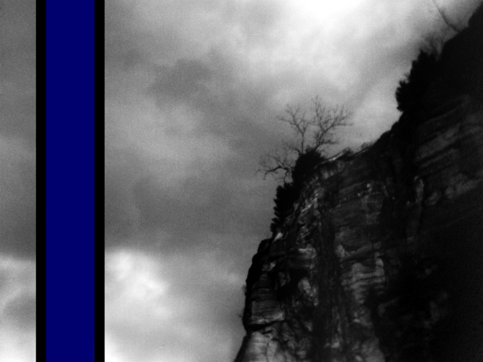
CLIFF-HANGER, 2016
A SERENE SKY COVERED BY DARKNESS. ON THE SIDE OF A CLIFF SITS A SMALL TREE, LIVING ON THE EDGE, SURVIVING IN SOME WAY. HOW CAN A TREE EVEN DECIDE TO SECURE ITSELF THERE? A SORT OF THRESHOLD BETWEEN TRUST AND FEAR. LOOKING OUT OVER ITS LIMITED CORNER OF EXISTENCE, ON THE VERGE OF THE END, BARELY HANGING TO ITS SUPPORT. IT MAKES YOU WANT TO QUESTION YOUR BOUNDARIES AND DECIDE JUST HOW INVITING SHOULD ONE BE? I FIND THIS PRINT HELPS TO CAPTURE A SENSE OF THE EXTREMENESS THAT WE ALL FACE MOVING TOWARD CREATING A FUTURE THAT IS UNKNOWN.
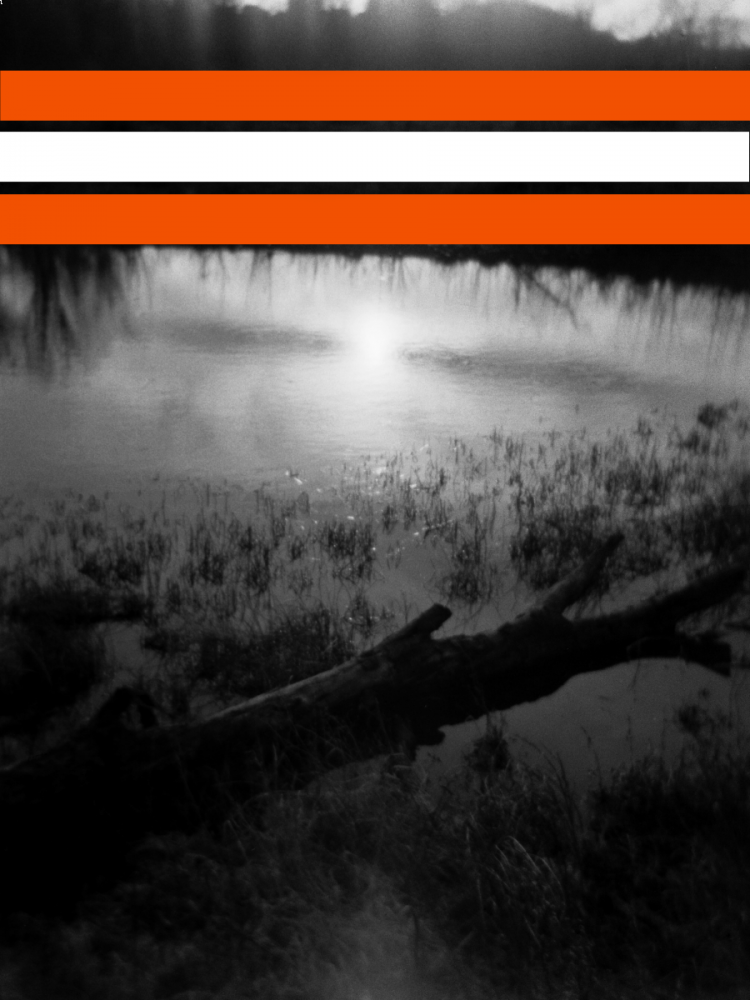
FOOTBRIDGE, 2015
IN LOOKING AT THIS IMAGE, IT FEELS AS THOUGH YOU COULD WALK ACROSS THE WATER EASILY WITHOUT ANY EFFORT AND GO FOR A SWIM. THE FALLEN TREE RESTS ON THE REFLECTION OF THE LIGHT, COMPLETELY VOID OF ALL SPACE OR TIME. AN ALMOST VANISHING PATHWAY, OR AN ILLUSION OF A DEAD-END STREET. THEN YOU QUICKLY REALIZE, THERE IS NO SUPPORT OR SUBSTRUCTURE TO BRACE YOURSELF AND YOUR FEET COULD LOSE THEIR BALANCE AND FALL ANYTIME.
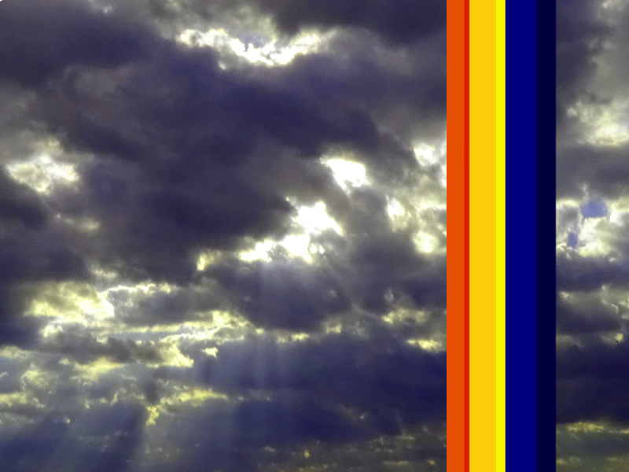
CLOUDS, 2016
IT IS A MODEST SKY, LIKE MANY OTHERS AND YET IT GETS MORE AND MORE COMPLEX WHEN STUDIED ALONGSIDE THE POSSIBILITY OF INFINITY. THE SUN IS HIDDEN, BEHIND THE LOOSELY FORMED CLOUDS, ALMOST WITH A SENSE OF SHYNESS. THE COLORS ARE MUTED, THROUGH A SORT OF SILENCE AS RAYS OF LIGHT ARE SHOWN BEAMING DOWN STILL CAPABLE OF NOURISHING THE GROUND, UNPOLLUTED AND SINCERE.
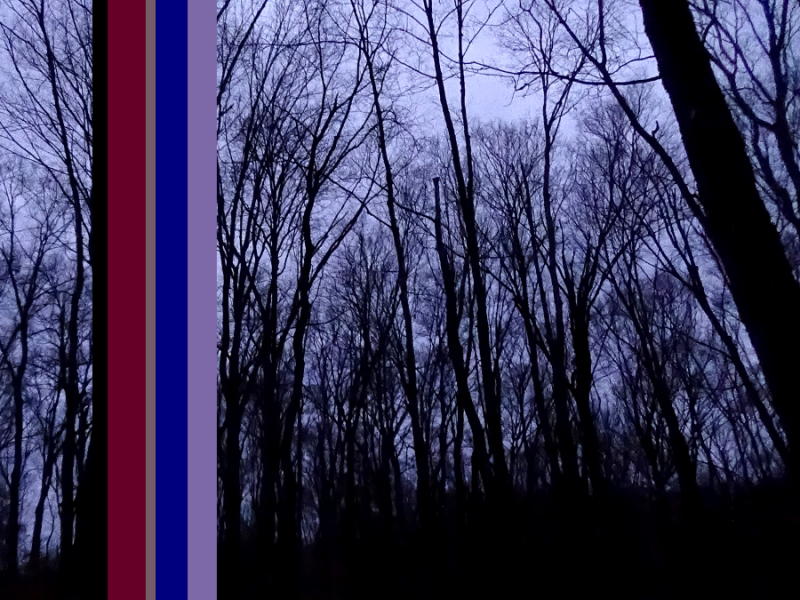
DARK WOODS, 2016
TAKEN JUST BEFORE WINTER, WHEN THE TREES HAVE LOST MOST OF THEIR LEAVES. IT WAS NEARLY DARK, WITHOUT THE SUN. THE WOODS TAKE ON ANOTHER SOUND THEN, SILENT. YOU NOTICE YOUR MOVEMENTS AND BEGIN TO QUESTION THEM. WILL I FIND MY WAY BACK OR IS IT TOO LATE? THERE IS A SENSE OF FEAR, BUT NOT OF THE FOREST. I THINK IT IS MORE FROM THE SHADOWS WITHIN THE OUTDOORS. ALMOST LIKE THE DARKNESS IS COMPETING WITH ITSELF FOR ATTENTION AS TO WHO IS DARKER. WHEN IN A FEW HOURS ALL WILL BE DARK FOR NOTHING WILL BE SEEN.
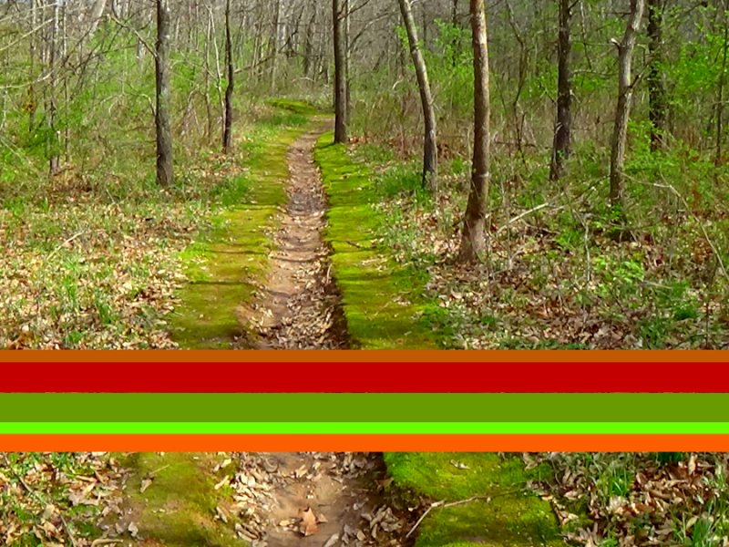
DIGITAL HIKER, 2015
A WORN STRAIGHT TRAIL WITHIN THE WOODS, SURROUNDED BY MOSS ON EITHER SIDE. IT MAKES YOU WONDER HOW MANY CREATURES HAVE TRAVELED ALONG ITS PATH TO MAKE SUCH A DEEP RUT. I FELT HONORED WALKING ALONG THE ROUTE AS IF I WAS A PART OF THE ONES WHO WALKED BEFORE. THE STEMS ARE SCARCELY COVERED, ALMOST NAKED LOOKING, UNABLE TO GROW THEIR LEAVES UNTIL NEXT SPRING.
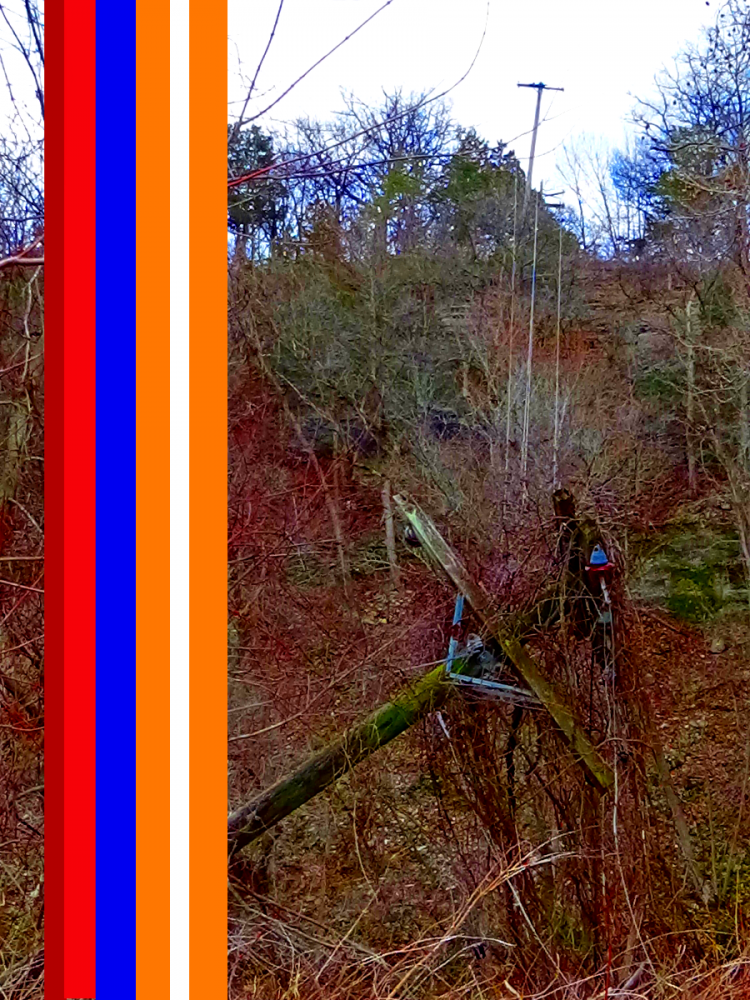
ELECTRIC SPIRIT, 2016
IN THE FOREFRONT, A NEARLY ANCIENT LOOKING TELEPHONE POLE AS IT STILL TRIES TO SUPPORT ITSELF, OVERGROWN BY THE VEGETATION AND VINES FROM A NEARBY TREE. NOTICE THE CONNECTION OF THE SECOND TELEPHONE POLE SITTING JUST ABOVE THE BLUFF IN THE DISTANCE, CAN'T HELP TO WONDER IF IT STILL WORKS OR IF IT IS THERE, JUST FORGOTTEN. THE PHOTO HAPPENED TO BE TAKEN ON EASTER DAY, GIVING THE IMAGE A SORT OF TIRED CRUCIFIX FEEL, WORN OUT FROM ALL THE ATTENTION.
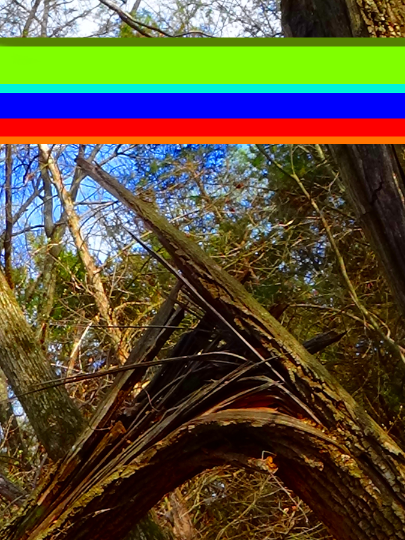
LIGHTNING ARCH, 2015
THE FORCE THAT IT MUST HAVE TAKEN TO MAKE THIS. ITS ANGLE IS IN THE SHAPE OF A PYRAMID. LOOKING AS THOUGH IT WAS SUPPOSED TO BE AN OTHERWORLDLY ARCHITECTURE CONSTRUCTED FOR MONUMENTAL PURPOSES. WHEN VIEWED CLOSELY, IT TAKES ON A FUTURISTIC MODERNITY NOT YET DISCOVERED. THE TIMBER VIOLENTLY SPLINTERS OUT IN LINES THAT ARE DIFFICULT TO REPRODUCE WITH THE HUMAN HAND. IT IS UNNATURAL, WITH A DESTRUCTIVE STYLE WHEN FIRST SEEN. ONCE CONSUMED AND DIGESTED, THOUGH, IT LEAVES YOU WITH A SENSE OF THE MISUNDERSTOOD POWER THAT NATURE HAS TO OFFER.
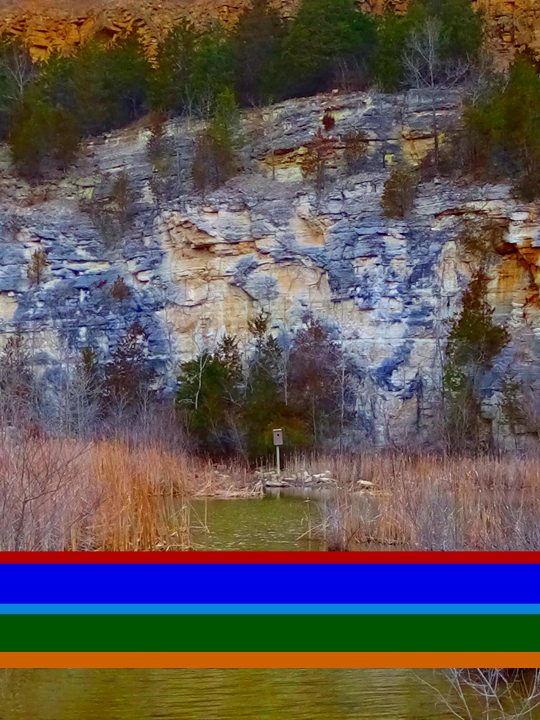
QUARRY HOUSE, 2016
A SIMPLE SQUARE BIRDHOUSE POSITIONED IN A MARSH AT THE BOTTOM OF A LIMESTONE QUARRY. THE BLUFF EXPOSED, THE AREA DUG OUT FROM THE EARTH FOR BUILDING OR OTHER PURPOSES. THE END OF THE TRAIL, THE ONLY DIRECTION TO GO IS BACKTRACKING HOW YOU CAME IN. SUCH AN INTERESTING PLACE FOR A BIRD TO LIVE. IT IS SO ISOLATED AND ALMOST IMPOSSIBLE TO APPROACH FOR A CLOSER LOOK.
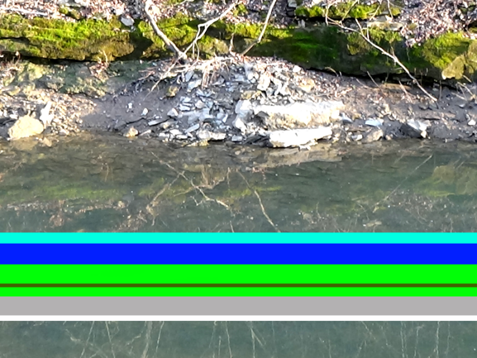
STREAM, 2015
THE WATER IS STILL, UNDISTURBED. REFLECTING A MIRRORED IMAGE AND GLASSLIKE, UPON A FLOATING IMPRESSION. ON THE EDGE OF THE BANK WHERE THE WATER MEETS THE SHORE. ITS ROCKS ARE EXPOSED, SURROUNDED BY MOSS AND TWIGS THAT SEEM TO ALMOST DANCE WITH EACH OTHER ALONG THE TWO DISTINCT SURFACES. THE COLORS OF THE STRIPES ARE USED TO MIMIC THE DESIGN OF THE LANDSCAPE.
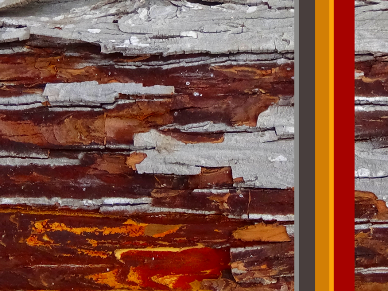
TREE BARK, 2016
ON A PARTICULAR DAY, I TOOK SEVERAL SHOTS OF DIFFERENT TREE BARK AND THIS ONE IS MY FAVORITE. THE COLORS WERE SO PROVOKING. I REALIZED THAT DAY THERE IS A WHOLE ABSTRACT WORLD OF SO MANY THINGS WITHIN THE FOREST IF LOOKED AT FROM A CLOSE PERSPECTIVE. ONCE YOU SPEND SOME TIME REVIEWING THIS IMAGE, IT BEGINS TO ALMOST TAKE ON THE SCENE OF AN ENTIRELY DIFFERENT TERRAIN WITHIN ITSELF.
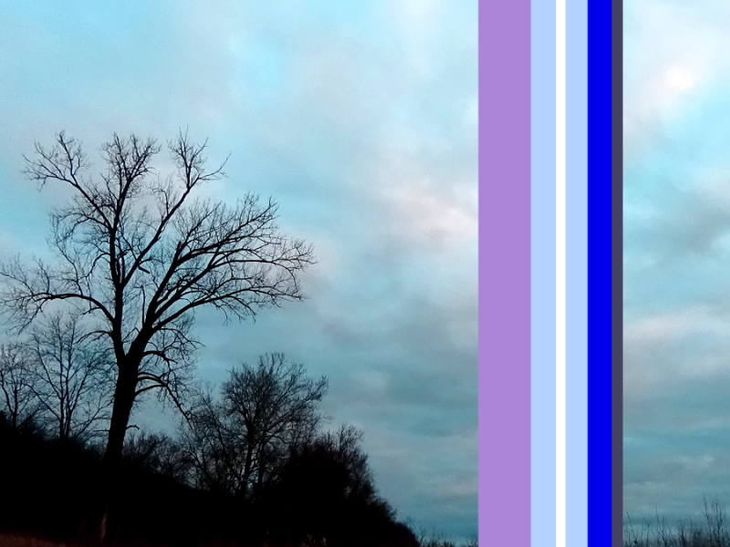
TREE FIELD, 2016
TREES ON A HILLSIDE OVERLOOKING A FIELD THAT IS BARELY VISIBLE, RUNNING ALONG THE RIGHT. THE PORTRAYAL IS AN INTERESTING CONTRAST, FROM THE EARTH TO THE SKY. THERE ARE THESE EMPTY SPACES BETWEEN THE CLOUDS AND DARKNESS OF THE TREES, SUCH IS THE DIVISION OF NATURE. THE LINES USED WERE FROM COLORS THAT EXIST WITHIN THE REALIZATION OF THE BACKGROUND. TOGETHER THEY LOOK SERENE.
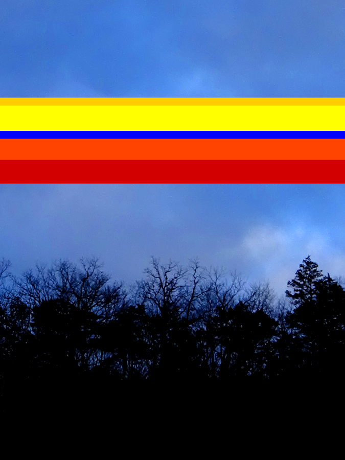
TREETOPS, 2016
THE DARKNESS OF THE FOREST, THE SUBTLE NUANCE OF CLOUDS AND BLUE OF THE SKY, AS IT SLOWLY FADES IN THE PLANE. ITS JUXTAPOSITION CONFUSES THE VIEWER NOT KNOWING EXACTLY IF IT IS NIGHT OR MORNING. INTERESTING THAT THE TOPS OF THE TREES ALWAYS SEEM TO TAKE ON UNIQUE SHAPES. IT IS THE DIVISION BETWEEN EARTH AND HEAVEN.
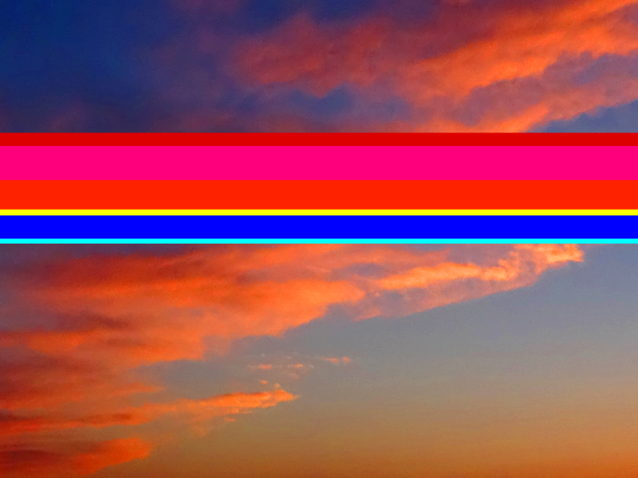
TWILIGHT, 2015
JUST AFTER THE SUN SETS, A FAINT LIGHT ON THE HORIZON. INSPIRED BY THE ILLUMINATION OF THE ATMOSPHERE AND RAYS OF LIGHT. THE FACADE OF THE EARTH IMPERFECTLY ILLUMINATED AND OBSCURED. IT FEELS SHADED AND EPIC. THE TIME WHEN NATURE'S POWERS ARE AT THEIR GREATEST.
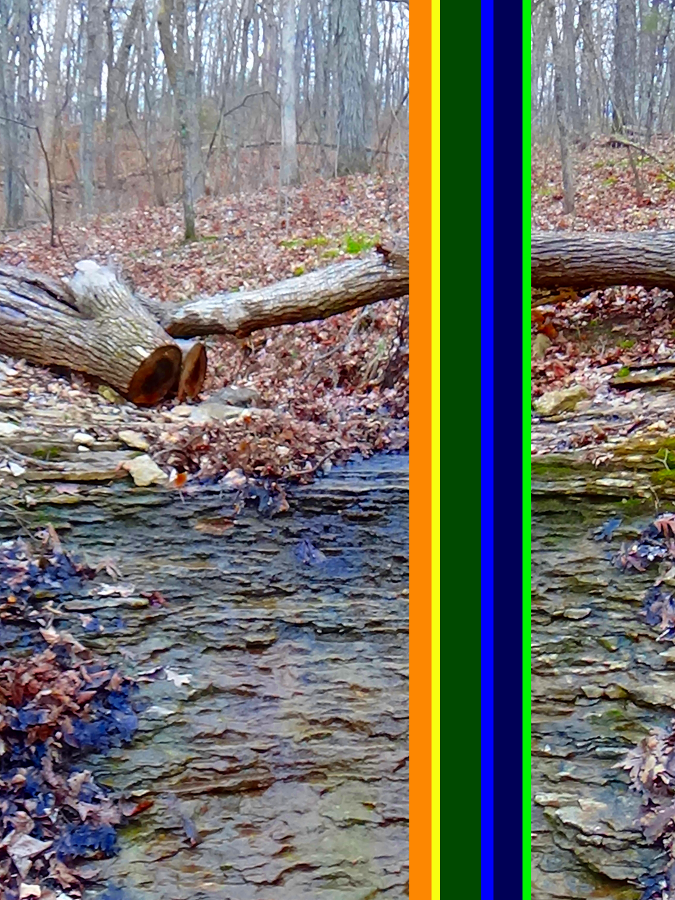
WATERFALL, 2015
THE SETTING IS A WASH, WITH FALLING WATER AND CHOPPED DOWN TREES. SITTING JUST ABOVE AND IN FRONT OF A BARREN WOODED BACKDROP IS A STUMP. THE INCLINATION SHOWN MUST HAVE BEEN SLOWLY ERODING OVER MILLIONS OF YEARS TO FORM. A SORT OF WORN MASONRY OCCASIONALLY FOUND THROUGHOUT THE MISSOURI LANDSCAPE. THIS PARTICULAR ONE, THOUGH, IS UNLIKE ANY I HAVE EVER SEEN. ALMOST PERFECTLY MANUFACTURED.
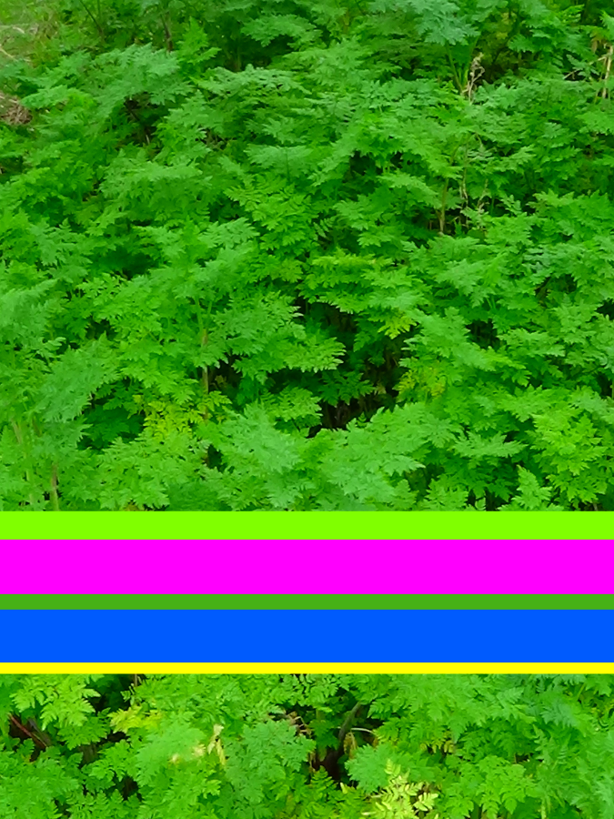
WILD PLANTS, 2015
A CLOSE-UP VIEW OF A HILLSIDE COVERED IN PLANTS, I BELIEVE THEY COULD BE SOME WILD FERN. NEARLY PASSED BY WITHOUT TAKING A PHOTO. THESE COLORS ARE FOUND SO OFTEN IN NATURE. THE LEAVES WERE SO DENSELY POPULATED TOGETHER WITH HARDLY ANY SPACE IN BETWEEN.
CLOSING STATEMENT
HOW TO PAINT THE LINES? THE INTENSE RELATIONSHIP BETWEEN THE SUBJECT MATTER OF NATURE AND MACHINE IS DIFFICULT FOR MOST PEOPLE TO COMPREHEND. CREATING A CHANCE TO COMPARE THE DIFFERENCES AMONG PERFECTION AND CHAOS HAS BEEN OVERWHELMING. THIS EXHIBITION HELPED ME TO GAIN MORE CLARITY, IN A STILL UNCHARTED TERRITORY FOR MANY. I WANTED TO KEEP THE WRITING RELAXED AND PHOTOGRAPHS CONCEPTUAL. I FEEL THE IMAGES ARE NOW IN THE EARLY STAGES OF DEVELOPMENT AND COULD TAKE A LIFETIME TO GET THE RIGHT SHOTS. ORIGINALLY, THE INSTALLATION WAS SUPPOSED TO CONCENTRATE ON THE NURTURING ASPECTS OF NATURE AND HOW THE ORGANIC MACHINE INTERACTS WITH IT. SPECIFICALLY, THE TRANSITIONAL PARTS FROM THE VERY BEGINNING OF NATURE UP TO THE CURRENT EFFECTS THAT OURSELVES AND MACHINES ARE HAVING AND CONTINUE TO HAVE ON CIVILIZATION AS A WHOLE. I AM NOT SURE IF THIS GOAL IS ATTAINABLE WITH MY LIMITED MAINTENANCE. HOWEVER, THE FURTHER I WORKED WITH THIS NOTION THE MORE IDEAS THERE WERE TO CONSIDER.
IT SEEMS NOWADAYS WE'RE FORCED TO LIVE IN A CONSTANT STATE OF CONFLICT WITH OUR SURROUNDINGS. TRYING TO DECIDE OVER INTERNAL AND EXTERNAL FORCES AS IF THERE IS NO REAL RESOLUTION. THE MENTAL ARGUMENTS FOR THE FIGHT TO SURVIVE IN AN UNWINNABLE ENVIRONMENT. CHOOSING ONE OVER THE OTHER AND HAVING TO WITNESS THIS CONTEST THAT EXISTS BETWEEN NATURE OR MACHINE CAN BE TORTUOUS. WHEN WHAT ONE REALLY NEEDS IS A COMBINATION OF BOTH FOR ANY JUDGMENT OF EQUILIBRIUM.
HUMANKIND DOESN'T SEEM TO BE COMPATIBLE WITH NATURE AT TIMES, AS IT ALMOST REJECTS THE CONTINUED MECHANIZATION OF SOCIETY IN CULTURE AND ITS CITIES. IS IT THE LIGHT THAT GIVES US ENERGY OR POSSIBLY THE DARKNESS OF NOT KNOWING, IN OUR HURRY TO DISCOVER THE LATEST ANSWER? HAVING THE SKILL TO INTERPRET THE CYCLE OF NATURE IS WHY I DESPERATELY SEEM TO BE SEARCHING. IN LOOKING THERE IS A SORT OF BEAUTIFUL CRUELTY THAT EXISTS, A REAL MISUNDERSTANDING WITHIN SPECIES. TRYING TO BE ABLE TO FIGURE OUT HOW IT FUNCTIONS AND MAKE SENSE OF IT ALL, SO THE DIRECTION I GROW IS AT THE VERY LEAST MANAGEABLE IS MY PURPOSE. I BELIEVE THIS TO BE THE JOURNEY OR ADVENTURE WE ALL GO THROUGH AS WE EACH FIND OUR OWN INNATE ABILITY TO EXPLORE NEW PLACES.
IT IS IMPORTANT NOT TO FORGET ABOUT THE PAST AND NATURE AS THE SOURCE OF THIS PAST. THERE SEEMS TO BE A PROFOUND MEANING TO THINGS WHEN THOUGHT OF AS THEY ONCE WERE. THE PLACE WHERE WE CAME FROM, THE ANCIENT AND NATIVE EARTH. EVEN WHEN THE FUTURE PATH IS SO UNNATURAL AND CROWDED, WITH A CONTINUOUSLY FAST LIVING FLOW OF ARTIFICIALITY.